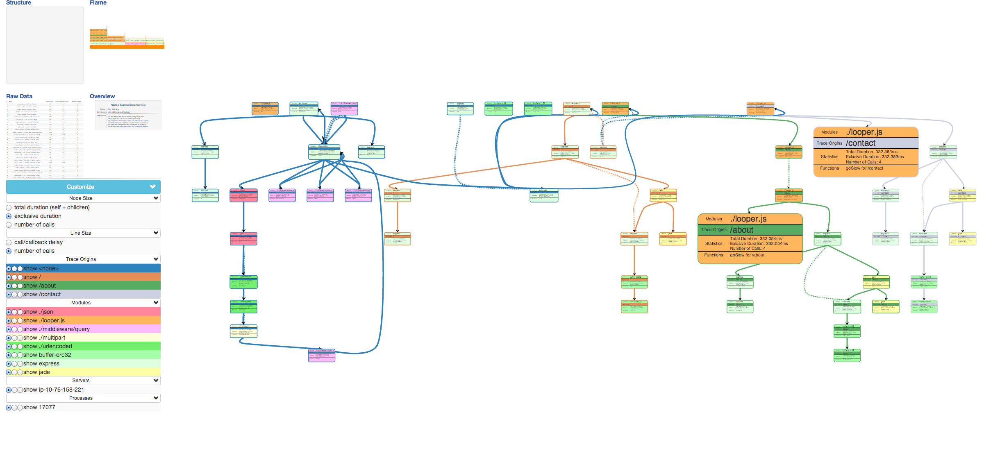
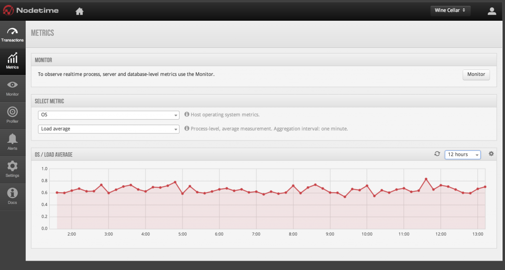
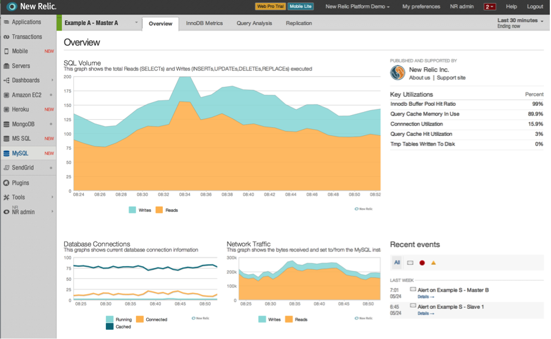
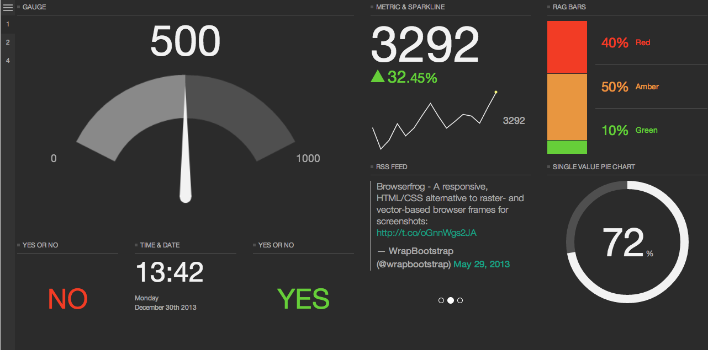
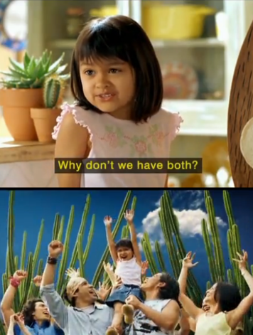
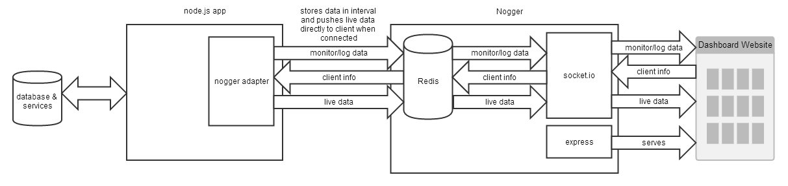
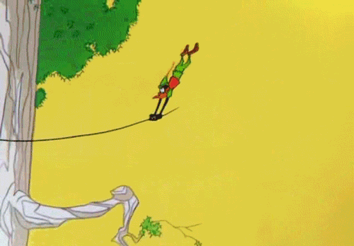

Nogger
node monitor & logger
Created by
Paul Emathinger
Situation
Concurix

Nodetime

New Relic

pm2

Improvements to existing solutions
Monitoring or Logging?

Network traffic?
Concept

Try to stay with me for a second!
Demo Time!

What could possibly go wrong?
Questions?